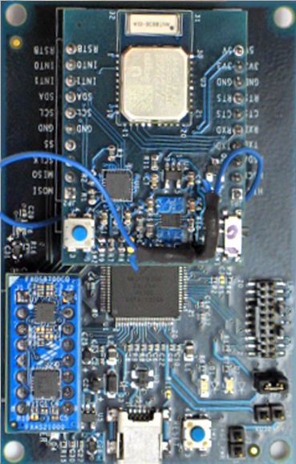
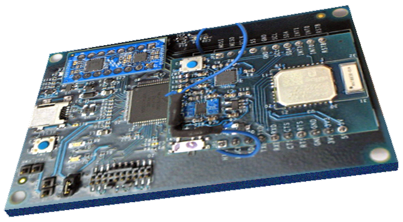
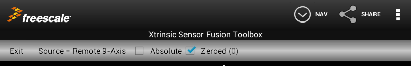
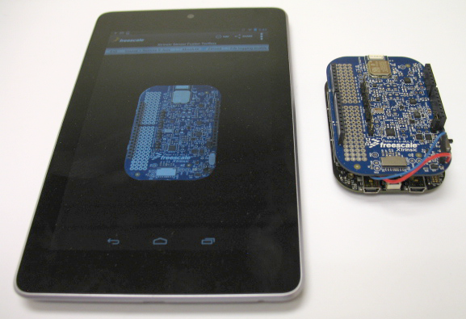
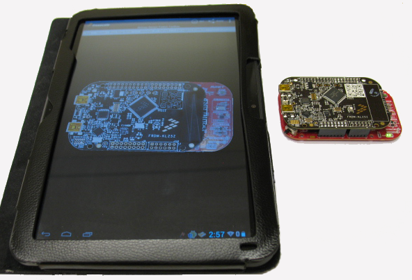
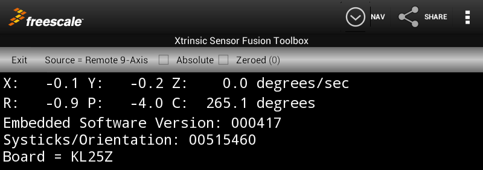

The Device View
Overview
The Device view provides a graphical 3D view of a Freescale Sensor Board. The board appears to rotate as a function of data source inputs selected via the Mode = Device spinner control which appears near the top of ths screen.


The board displayed on your Android device may be different from that shown above. Supported board images for this release of the toolkit are the Freescale Sensor Fusion Development Platform and the Avnet Wi-Go board.
Data source options (selected via the Source spinner control) include:
- Stopped - There is no sensor data stream
- Local accel - Uses data from accelerometer sensors on your Android device to drive the display. This selection can be used to demonstrate the limitations of using a single sensor type to drive orientation calculations. This version uses the native accelerometers on your Android device.
- Local mag/accel - Uses data from accelerometer and magnetic sensors on your Android device to drive the display. This is an example of 6-axis sensor fusion using the Native Android function: getRotationMatrix().
- Local 9-Axis - Uses data from accelerometer, magnetic and gyro sensors on your Android device to drive the display. This is an example of 9-axis sensor fusion using the Android synthetic rotation vector sensor.
- Remote accel - Uses data from the accelerometer sensor on your Bluetooth-enabled Freescale sensor board to drive the display. This selection can be used to demonstrate the limitations of using a single sensor type to drive orientation calculations.
- Remote mag (2D algorithm) - Uses data from the magnetometer sensor on your Bluetooth-enabled Freescale sensor board to drive the display. This selection can be used to demonstrate the limitations of using a single sensor type to drive orientation calculations.
- Remote gyroscope - Uses data from the gyroscope sensor on your Bluetooth-enabled Freescale sensor board to drive the display. This selection can be used to demonstrate the limitations of using a single sensor type to drive orientation calculations.
- Remote mag/accel - Uses data from accelerometer and magnetic sensors on your Bluetooth-enabled Freescale sensor board to drive the display. This is an example of 6-axis sensor fusion.
- Remote accel/gyro - Uses data from accelerometer and gyro sensors on your Bluetooth-enabled Freescale sensor board to drive the display. This is an example of 6-axis sensor fusion.
- Remote 9-Axis - Uses data from accelerometer, magnetic and gyro sensors on your Bluetooth-enabled Freescale sensor board to drive the display. This is an example uses Freescale 9-axis sensor fusion results calculated on your Freescale sensor board.
- Wi-Go accel - Uses data from accelerometer sensors on your Avnet WiGo module to drive the display. This selection can be used to demonstrate the limitations of using a single sensor type to drive orientation calculations. Uses data from accelerometer and magnetic sensors on your Avnet Wi-Go module to drive the display. This is an example of 6-axis sensor fusion.
- Fixed Rotation - Uses preprogrammed values to drive display functions. The logging function is inactive in this mode.
These are exactly the same options available on the Logging and Panorama views.
And like those views, you can enable file logging as well as share your results via the "Share" function.
You can set a default email address for sharing activities via the applications Preferences screen. You can also set the Android sampling rate on the same screen.
A low pass filter option is available for use with a number of Source/Algorithm options. Details are contained on a separate page.
Additional Demo Controls

Two other options on the Fusion Settings Bar effect this view:
- Absolute checkbox - if checked, only your development board affects the display. If unchecked, the display is a function of both the development board sensors AND the sensors (and orientation) of your Android device.
- Zeroed checkbox. This control can be used to cancel out any magnetic offset from the displayed board. The offset is computed when the checkbox goes from unchecked to checked. It only applies so long as the checkbox remains checked.
You can check both Absolute and Zeroed checkboxes. In that case, be sure to check the Zeroed checkbox AFTER the Absolute checkbox.
X/Y axis alignments vary on some Android devices. The photos below show how you should align your board to your Android device before checking the "Zeroed" checkbox. You will get incorrect results if you do not have your Android device and development board aligned properly when you click the Zeroed checkbox. Your development board should always be aligned as the app shows it to be after the checkbox is checked. If in doubt, experiment. Finally, the Zeroed checkbox will always be unchecked when you uncheck the Absolute checkbox. This forces you to "re-zero" your board to account for offsets introduced by your Android device.
Note: The Absolute checkbox is also present on the Canvas view. In that case, it selects between use of a relative air mouse and an absolute pointer.

Board/Phone Alignment for FRDM-FXS-MULTI shield and Sony Xperia Phone

Board/Phone Alignment for FRDM-FXS-MULTI shield and Nexus 7 Tablet

Board/Phone Alignment for FRDM-FXS-MULTI shield and Xoom Tablet

Board/Phone Alignment for Wi-Go with Xoom Tablet
Additional Demo Data

Angular rates, roll/pitch/heading and debug packet displays
In addition to the graphical display shown in the previous section, the Device view can also display
- Angular rate X, Y and Z values (in degrees/second).
Angular rates are computed on embedded software running on your Freescale development board. They are not available when using local sensors, or Wi-Go. Rate information is computed as a function of the Source/Algorithm spinner settings as follows:
- Remote accel - angular rates are computed using virtual gyro computations based upon orientations computed from accelerometer only. As such, they will be inaccurate with respect to rotation about the gravity vector.
- Remote mag (2D algorithm) - angular rates are restricted to Z-axis only.
- Remote gyro - angular rates straight from the physical gyro (no compensation)
- Remote accel/mag - angular rates are computed using virtual gyro computations based upon orientations computed from accelerometer and magnetometer readings. They are therefore sensitive to magnetic interference.
- Remote accel/gyro - gyro offsets are calculated via a 6-axis (accel + gyro) indirect Kalman filter and subtracted from physical gyro readings. These are then displayed on the Device view.
- Remote 9-axis - gyro offsets are calculated via a 9-axis (accel + mag + gyro) indirect Kalman filter and subtracted from physical gyro readings. These are then displayed on the Device view.
- Roll, Pitch and Compass Heading in degrees. This data is not available when using local sensors, or Wi-Go. Note that Compass heading starts at 0 and increases as a board is rotated clockwise. Conversely, angular rates (below) are positive in a counter-clockwise fashion.
- Debug information - If the "Enable debug packet display" checkbox in the preferences screen is checked, then the Device view will display the following whenever a debug packet is received:
- Embedded Software Version (corresponds to the THISBUILD macro value defined in proj_config.h of the Xtrinsic Sensor Fusion Library for Kinetis MCUs)
- The number of system tick timer (SysTick) cycles which elapsed during the last sensor fusion calculation. Google "ARM SysTick" for details.
- Which Freedom board created this data stream (from Packet type 1)
(1) is labeled "X: Y: Z:"
(2) is labeled "R: P: C:"
All three are enabled via checkboxes in the Preferences screen. All require support from your embedded app. See Bluetooth Packet Structure for additional details.
Continue to Panorama View.
Continue to Description of the low pass filter option.